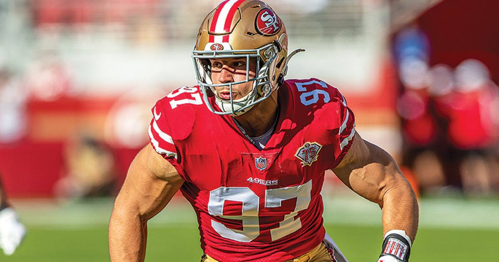

Bosa, Evans and Samuel All Out for 49ers at Falcons
Kyle Shanahan ruled out Nick Bosa, Mike Evans and Deebo Samuel for the 49ers' Week 7 game at Atlanta — and Evans will miss his first game of the season.

Disclosure: this post contains affiliate links. I earn a commission on qualifying purchases.
Kyle Shanahan ruled out Nick Bosa, Mike Evans and Deebo Samuel for the 49ers' Week 7 game at Atlanta (USA TODAY).
The three absences
The headline trio covers both sides of the ball:
• Nick Bosa — out
• Mike Evans — out
• Deebo Samuel — out
Losing two starting receivers and a star pass rusher in the same week is a different kind of injury report — it reshapes the game plan on offense and defense at once.
Evans misses his first
Evans will miss his first game of the season (NBC Sports Bay Area). That detail matters: this isn't a player who has been in and out of the lineup. Evans has been available all season until now, and Week 7 at Atlanta is where that run ends.
What it means for Sunday
San Francisco heads to Atlanta without its top-end receiving threats and its premier edge presence. The Week 7 matchup now becomes a depth test — who steps into the roles Bosa, Evans and Samuel normally own, and whether the 49ers can win a road game shorthanded at the positions that usually decide games.
Watch
Source: "Kyle Shanahan shares final updates ahead of 49ers-Falcons" from the San Francisco 49ers — Shanahan's Friday press conference, where he announces the outs for the Falcons game.
Gear up: Fanatics